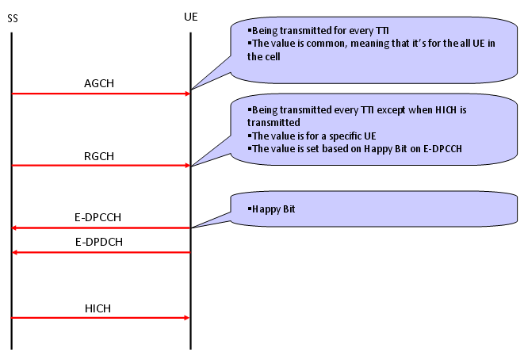
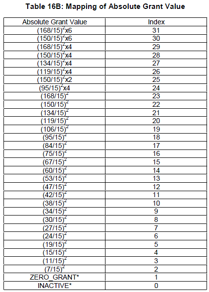
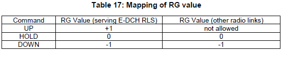

|
UMTS Quick Reference Go Back To Index Home : www.sharetechnote.com |
|
|
HSUPA - UL Grant/E-AGCH,E-RGCH
In HSDPA case, data source is NodeB and destination is UE. Since Network (the data source) is the master and it has all the authorities for data transmission scheduling, it doesn't need any Grant ("approval for data transmission"). Basically Network can transmit the data anytime it is ready. But in HSUPA case the situation is different. The data source is UE and Network is data sinc(reciever), but UE is not the master of the scheduling. Network is scheduling master all the time. It means that in HSUPA, the transmitter (UE in this case) has to have "approval for transmission" from the data reciever (Network in this case). The "Approval for transmission" is called "UL Grant", and overall mechanism for UL Grant and data transmission in HSUPA goes as follows. As you see, there are two different types of UL Grant called "Absolute Grant" carried by AGCH(Absolute Grant Channel) and "Relative Grant" carried by RGCH(Relative Grant Channel). Absolute Grant is being transmitted by the network every TTI and it is transmitted to the all UE communicating to the network. Relative Grant can be transmitted only at the TTI in which PHICH is not transmitted.

The value for the Absolute Grant can be 0 ~ 31. Except the value 0~1. All the remaining value is mapped to a certain level of power value that UE can use for data transmission. (At the beginning, I was so confused about this value. When we say "Grant", I expected each of the value would mean "Yes, you can transmit the data and this is the data rate you can transmit". But what I see from the following Absolute Grant table is "Here is the amount of power you can use for the data transmission". Then you may ask "Is there any predefined algorithm running on UE side which maps this power value to the real data rate ?". Excellent question ! Yes, there is. UE is performing a special E-TFCI selection algorithm based on how much power it can use for data transmission and this Grant value determines "how much power is available for the data transmission".
Following is Absolute Grant table from 25.212 v9.4.0.

Now let's look into the Relative Grant. Relative Grant carries three different status (Command), UP, HOLD, DOWN and the meaning of this command is defined in 25.212 as follows.

|